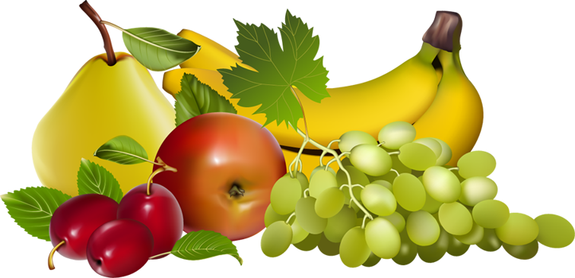

Fresh Fruits | |
|---|---|
|
In botany, a fruit is a part of a flowering plant that derives from specific tissues of the flower, one or more ovaries, and in some cases accessory tissues. Fruits are the means by which these plants disseminate seeds. |
 |